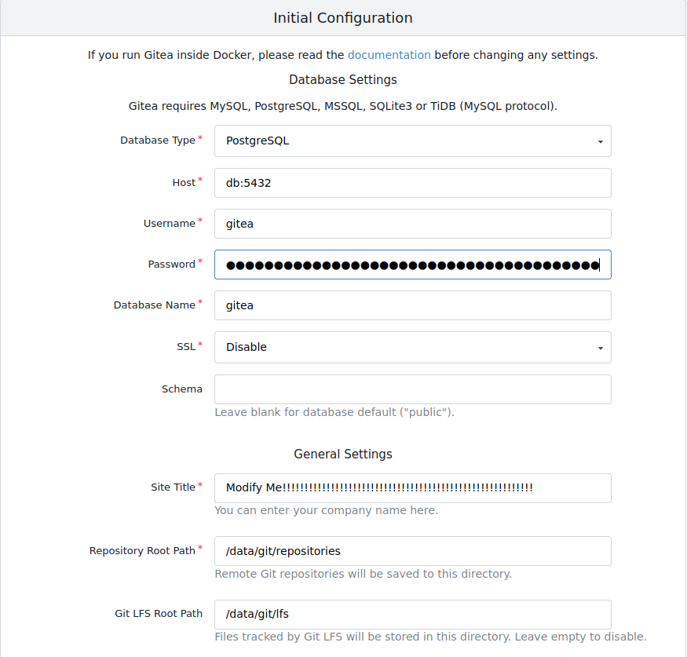
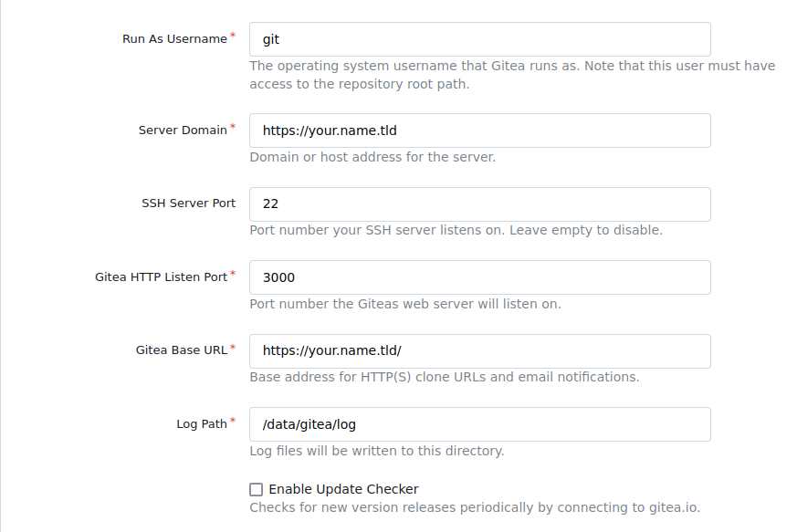
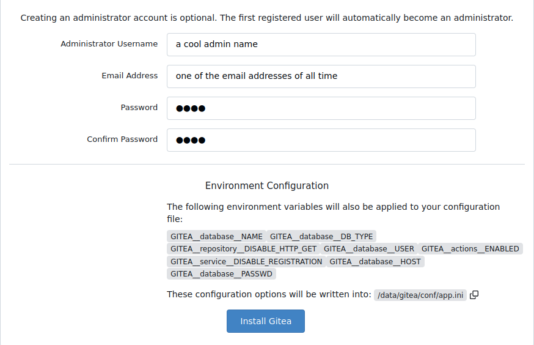

Introduction
Hello reader from the 4th dimension: the internet. This post covers how I used Nginx, Gitea, and Docker together to create the Git instance hosted at git.evotrade.org. I am new to Nix (I started 2 days ago), so I hope this blog sheds some light covering the 3??? posts I found on duckduckgo covering Gitea and Nix.
This is not a replacement for official documentation!
If you need a true understanding of anything deeper than what’s in this post, please for love of god visit gitea’s official website!
https://docs.gitea.com/next/installation/install-with-docker
The wonderful compose file
Here’s the compose file for those who hate scrolling down and don’t want to read (me included 👍)
Actually modify this! Note: 辛抱 means patience in Japanese (google translate ftw)
networks:
gitea:
external: false
volumes:
gitea_vol:
driver: local
services:
server:
image: gitea/gitea:latest
container_name: gitea
environment:
- USER_UID=994 # This is a note
- USER_GID=992 # This is also a note
- GITEA__database__DB_TYPE=postgres
- GITEA__database__HOST=db:5432
- GITEA__database__NAME=gitea
- GITEA__database__USER=gitea
- GITEA__database__PASSWD=modify_me_with_辛抱
- GITEA__service__DISABLE_REGISTRATION=true
- GITEA__repository__DISABLE_HTTP_GET=true
- GITEA__actions__ENABLED=true
networks:
- gitea
volumes:
- gitea_vol:/data
- /var/lib/gitea-server/.ssh:/data/git/.ssh
- /etc/timezone:/etc/timezone:ro
- /etc/localtime:/etc/localtime:ro
ports:
- "3000:3000"
- "127.0.0.1:2222:22"
restart: unless-stopped
depends_on:
- db
db:
image: docker.io/library/postgres:14
restart: always
environment:
- POSTGRES_USER=gitea
- POSTGRES_PASSWORD=modify_me_with_辛抱
- POSTGRES_DB=gitea
networks:
- gitea
volumes:
- ./postgres_data:/var/lib/postgresql/data After pasting this into a file, you should absolutely modify the password used.
Final note: Don’t put plaintext passwords straight in the file in prod. There are ways around this with docker secrets, but it’s a pain and not in the Nix style. I have my config setup like this until I learn enough Nix to turn this into it’s own .nix file.
Another Final Note: Take a gander at the UID and GID, you will probably need to modify those for your own setup. Details later.
Modifications I made to this compose.yml
services:
server:
environment:
- GITEA__service__DISABLE_REGISTRATION=true
- GITEA__repository__DISABLE_HTTP_GET=true
- GITEA__actions__ENABLED=truedisable registration just makes it so new people can’t go to my repo, make an account, and then wreak unspeakable things on my server. disable http get just makes cloning over http impossible. No sneaky in my code :). actions enabled allows repo wide actions to happen. Google what they are, trust.
How to run
In order to run this, I’m assuming you have decent knowledge about docker. If not, you have google. No link for you.
Basically all you need to do to run this is:
sudo docker compose up -d once you’ve changed the password. If you have an email address,
feel like interacting, and need help, my email can be found in the About section.
This will open a web server at your_local_ip_here:3000. If 3000 is taken, modify the 3000:3000 to be something like 3001:3000.
This sets the exposed port to your host do be 3001 rather than 3000.
Afterwards some basic configuration will pop up. You actually have to edit some of these
  
congartulation! You have successfully completed the easist part of this post.
NixOS configuration :))))))))))))))))
I used Nginx for this.
{
users.users.git = {
isSystemUser = true;
group = "git";
home = "/var/lib/gitea-server";
createHome = true;
shell = "/var/lib/gitea-server/ssh-shell";
};
users.groups.git = {};
# For nginx to work with acme
# https://bkiran.com/blog/using-nginx-in-nixos
users.users.nginx.extraGroups = [ "acme" ];
# Enable the OpenSSH daemon.
services.openssh = {
enable = true;
ports = [ 22 ];
settings = {
PasswordAuthentication = false;
AllowUsers = null;
UseDns = true;
X11Forwarding = true;
PermitRootLogin = "no";
};
};
# Open ports in the firewall.
networking.firewall.allowedTCPPorts = [ 22 80 443 ];
networking.firewall.allowedUDPPorts = [ 22 80 443 ];
# Pulled directly from the wiki
# https://nixos.wiki/wiki/Nginx
services.nginx = {
enable = true;
recommendedGzipSettings = true;
recommendedOptimisation = true;
recommendedProxySettings = true;
recommendedTlsSettings = true;
sslCiphers = "AES256+EECDH:AES256+EDH:!aNULL";
appendHttpConfig = ''
# Add HSTS header with preloading to HTTPS requests.
# Adding this header to HTTP requests is discouraged
map $scheme $hsts_header {
https "max-age=31536000; includeSubdomains; preload";
}
add_header Strict-Transport-Security $hsts_header;
# Enable CSP for your services.
#add_header Content-Security-Policy "script-src 'self'; object-src 'none'; base-uri 'none';" always;
# Minimize information leaked to other domains
add_header 'Referrer-Policy' 'origin-when-cross-origin';
# Disable embedding as a frame
add_header X-Frame-Options DENY;
# Prevent injection of code in other mime types (XSS Attacks)
add_header X-Content-Type-Options nosniff;
# This might create errors
proxy_cookie_path / "/; secure; HttpOnly; SameSite=strict";
'';
# The definitions of the individual sites go here.
virtualHosts."name.tld" = {
serverName = "name.tld";
useACMEHost = "name.tld";
acmeRoot = "/var/lib/acme/challenges-name";
forceSSL = true;
locations."/" = {
proxyPass = "http://127.0.0.1:3009"; # this is just a proxy to my static site
};
};
virtualHosts."git.name.tld" = {
serverName = "git.name.tld";
useACMEHost = "name.tld";
acmeRoot = "/var/lib/acme/challenges-name";
addSSL = true;
forceSSL = false;
locations."/" = {
proxyPass = "http://127.0.0.1:3000"; # the gitea docker container
};
};
virtualHosts.default = {
serverName = "_";
default = true;
rejectSSL = true;
locations."/".return = "444";
};
};
# SSL cert renewal
security.acme = {
acceptTerms = true;
defaults.email = "one_of_the_email_addresses@email.tld";
certs."name.tld" = {
webroot = "/var/lib/acme/challenges-name";
email = "one_of_the_email_addresses@email.tld";
group = "nginx";
extraDomainNames = [
"git.name.tld"
];
};
};
virtualisation.docker.enable = true;
}Creates and starts Nginx, will automatically renew certs for you too which is pretty cool. Points Nginx to redirect to the Docker container.
I’m gonna assume you know how to structure a Nix configuration.
If you want to see all of my configurations, they can be found on github.
This configuration is under hosts/roebox/configuration.nix.
Setting up SSH
At this point you should have all of the mandatory steps above completed. You need that git user basically.
In this example, I have my git user’s home directory at /var/lib/gitea-server. Now it’s a matter of following the official instructions
with a very slight amount of deviation.
https://docs.gitea.com/next/installation/install-with-docker
- Get your git user’s UID and GID.
Use sudo -u git id. Copy and paste the respective values into the compose file above.
This replaces the
- USER_UID=994 # This is a note
- USER_GID=992 # This is also a note- Generate an ssh key for your boy
sudo -u git ssh-keygen -t ecdsa -b 521 -C "Gitea Host Key". You can place key pair anywhere, I put it in /var/lib/gitea-server/.ssh.
- Copy and paste the generated public key into the authorized_keys file
I’m not giving commands for this one. The authorized_keys file /var/lib/gitea-server/.ssh/authorized_keys
sudo -u git chmod 600 /var/lib/gitea-server/.ssh/authorized_keysEnsure everything is owned by the git user
sudo chmod -R git:git /var/lib/gitea-server/.ssh
- Make ssh-shell
I didn’t try very hard with sshing shim because of the pathing. Instead I did sshing shell.
cat <<"EOF" | sudo tee /var/lib/gitea-server/ssh-shell
#!/bin/sh
shift
ssh -p 2222 -o StrictHostKeyChecking=no git@127.0.0.1 "SSH_ORIGINAL_COMMAND=\"$SSH_ORIGINAL_COMMAND\" $@"
EOF
sudo chmod +x /var/lib/gitea-server/ssh-shellI would make a test repo and see if cloning this works with ssh after adding a new public key to your account. Never add the generated public key from step 2 to gitea.
Outro
This was a culmination of a days effort attempting to figure this out. Hope this helps someone. Email me if you need help.